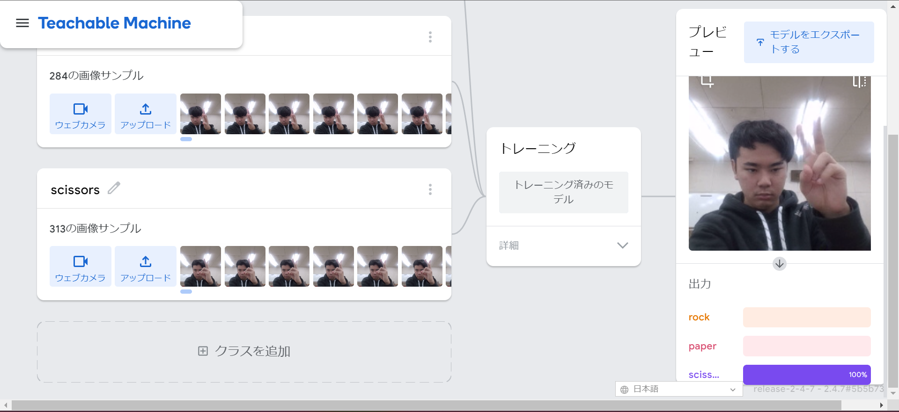
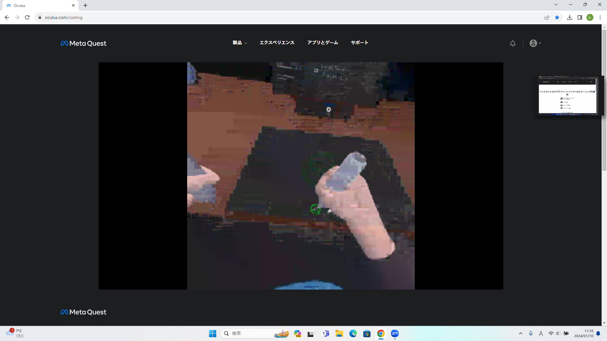

第2週目
2-1 １週目のレポートをHTMLで作る
１週目のレポート
1.内容
実習の内容・感想をテンプレとして用意されていたhtmlを一部編集し、レポートを作成した。
2.感想
htmlはPythonと操作感がかなり異なるので、大きな編集ができなかった。
2-2 機械学習体験

1.内容
Teachablemachineというサイトで画像認識機能を体験した。
2.感想
パーが行けたと思ったらチョキがダメだったことが多発し、去年やった時より苦戦した。角度調整が難しい。
2-3 VR（バーチャルリアリティー：Virtual Reality）会議室の体験

1.内容
Meta Quest2を使ってVR体験を行った。
2.感想
ミラーリングはやってなかったので、ちょっと新鮮な体験ができました。相変わらず画面酔いが…………